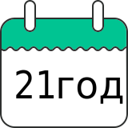
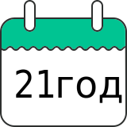

Почему выбирают нас?
Сейчас конкуренция на рынке резиновых покрытий достаточно высока. Чтобы работать с новыми клиентами и заказами, необходимо уметь объяснить, чем наша компания выделяется среди прочих, почему клиенты могут доверять нам, чем мы можем гарантировать, что наши клиенты получают лучшее по лучшим ценам! И вот наши аргументы:
Мы работаем на рынке резиновых покрытий с 2002 года.
Соответственно мы отработали 21 рабочий сезон! Далеко не каждый производитель может показать фото своих площадок, выполненных 20 лет назад. Мы можем! И считаем это поводом для гордости.
Соответственно мы отработали 21 рабочий сезон! Далеко не каждый производитель может показать фото своих площадок, выполненных 20 лет назад. Мы можем! И считаем это поводом для гордости.
Это второй блок


Это третий блок
Наши бригады за 21 сезон работы уложили более 2.5 миллиона квадратных метров различных покрытий.
Представляете себе такую площадь? Для сравнения площадь страны Монако составляет 2,02 квадратных километра (или 2 миллиона квадратных метров). Или 2.5 миллиона квадратных метров - это беговая дорожка (8 дорожек стандартной ширины 1,25 метра) протяженностью 250 километров. 250 километров - это расстояние от Москвы до Ярославля. А если мерить единицами более близкими для наших заказчиков, то 2.5 миллиона квадратных метров - это, например, 324 полноразмерных футбольных стадионов!
Представляете себе такую площадь? Для сравнения площадь страны Монако составляет 2,02 квадратных километра (или 2 миллиона квадратных метров). Или 2.5 миллиона квадратных метров - это беговая дорожка (8 дорожек стандартной ширины 1,25 метра) протяженностью 250 километров. 250 километров - это расстояние от Москвы до Ярославля. А если мерить единицами более близкими для наших заказчиков, то 2.5 миллиона квадратных метров - это, например, 324 полноразмерных футбольных стадионов!
Мы сотрудничаем с компаниями любых размеров и даже с частными лицами. Крупные компании доверяют нам.
Жилой комплекс "Микрогород в лесу", жилой комплекс "Олимпийская деревня Новогорск" (авторский проект Ирины Виннер), жилые комплексы Новые Ватутинки и Южный квартал - это крупные строительные проекты, выполненные с нашим участием. Среди наших заказчиков есть Сад Эрмитаж, сеть фитнее-клубов "Зебра", члены Ассоциации спортивного инжиниринга, Остов (г. Нарофоминск), и даже Центробанк.
Жилой комплекс "Микрогород в лесу", жилой комплекс "Олимпийская деревня Новогорск" (авторский проект Ирины Виннер), жилые комплексы Новые Ватутинки и Южный квартал - это крупные строительные проекты, выполненные с нашим участием. Среди наших заказчиков есть Сад Эрмитаж, сеть фитнее-клубов "Зебра", члены Ассоциации спортивного инжиниринга, Остов (г. Нарофоминск), и даже Центробанк.
Это шестой блок
Это седьмой блок
Мы практикуем индивидуальный подход к клиенту.
Мы выполняем разные работы - и небольшие частные площадки, и комплексные работы по обустройству спортивных стадионов. Естественно, потребности у таких разных заказчиков сильно различаются. Кто-то сосредоточен на беспрекословном соблюдении сроков и высочайшем качестве материалов, а кто-то хочет просто любое резиновое покрытие по минимальной цене. Мы стараемся удовлетворить запросы любого клиента. Конечно, в разумных пределах, чтобы не получилось, как в старом анекдоте: "Делаем быстро, дешево, качественно. Подчеркните нужный пункт".
Мы выполняем разные работы - и небольшие частные площадки, и комплексные работы по обустройству спортивных стадионов. Естественно, потребности у таких разных заказчиков сильно различаются. Кто-то сосредоточен на беспрекословном соблюдении сроков и высочайшем качестве материалов, а кто-то хочет просто любое резиновое покрытие по минимальной цене. Мы стараемся удовлетворить запросы любого клиента. Конечно, в разумных пределах, чтобы не получилось, как в старом анекдоте: "Делаем быстро, дешево, качественно. Подчеркните нужный пункт".
Наши бригады оснащены оборудованием, обучены на нем работать, что позволяет не только увеличить скорость их работы, но и повысить качество производимых покрытий для спортивных площадок.
В интернете до сих пор встречается мнение о том, что с помощью укладчиков резиновых покрытий получаются некачественные покрытия. Наш опыт позволяет нам утверждать со стопроцентной уверенностью, некачественные покрытия получаются, если не уметь работать на такой технике. Безусловно, возможность использования профессионального укладчика резиновых покрытий зависит от многих факторов - назначение площадки, тип основания и качество его подготовки. Но, если все эти факторы позволяют использовать укладчик, то покрытие получится плотным, гладким и идеальным по толщине. Можете проверить!
В интернете до сих пор встречается мнение о том, что с помощью укладчиков резиновых покрытий получаются некачественные покрытия. Наш опыт позволяет нам утверждать со стопроцентной уверенностью, некачественные покрытия получаются, если не уметь работать на такой технике. Безусловно, возможность использования профессионального укладчика резиновых покрытий зависит от многих факторов - назначение площадки, тип основания и качество его подготовки. Но, если все эти факторы позволяют использовать укладчик, то покрытие получится плотным, гладким и идеальным по толщине. Можете проверить!
Это десятый блок
Это одиннадцатый блок
Наши покрытия имеют полный комплект документов для применения их на спортивных и детских площадках открытого типа.
Мы имеем сертификаты на покрытие (на стандартные и профессиональные покрытия), сертификаты и паспорта на материалы, а так же свидетельство о зарегистрированном товарном знаке. Помимо этого нами разработаны внутренние документы: инструкции по укладке покрытий, инструкции по эксплуатации резиновых покрытий и площадок с искусственной травой, технологические карты и паспорта покрытий. Наши клиенты получают полный комплект документов по первому требованию.
Мы имеем сертификаты на покрытие (на стандартные и профессиональные покрытия), сертификаты и паспорта на материалы, а так же свидетельство о зарегистрированном товарном знаке. Помимо этого нами разработаны внутренние документы: инструкции по укладке покрытий, инструкции по эксплуатации резиновых покрытий и площадок с искусственной травой, технологические карты и паспорта покрытий. Наши клиенты получают полный комплект документов по первому требованию.